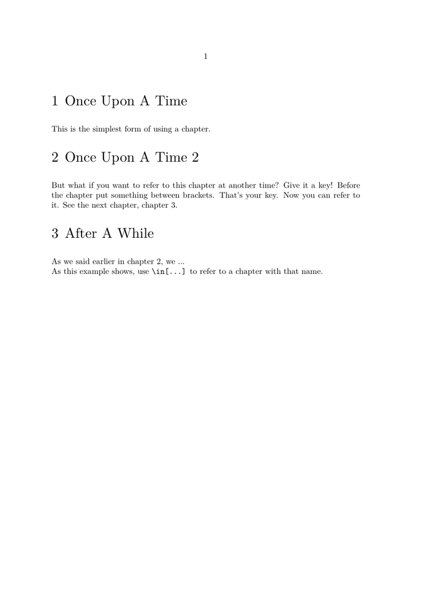
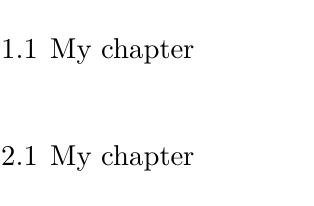
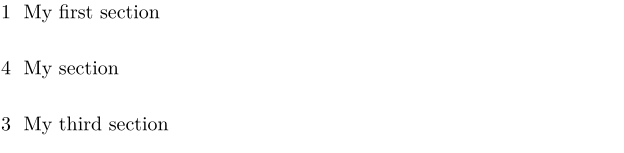

Contents
Summary
The instances of \section produce a sectioning title.
Instances
| \part | highest level of sectioning |
| \chapter | level 2 |
| \section | level 3 |
| \subsection | level 4 |
| \subsubsection | level 5 |
| \subsubsubsection | level 6 |
| \subsubsubsubsection | level 7 |
| \title | level 2, unnumbered |
| \subject | level 3, unnumbered |
| \subsubject | level 4, unnumbered |
| \subsubsubject | level 5, unnumbered |
| \subsubsubsubject | level 6, unnumbered |
| \subsubsubsubsubject | level 7, unnumbered |
Settings instance
| \SECTION[...,...]{...} | |
| [...,...] | reference |
| {...} | text |
| Option | Explanation |
|---|---|
| reference | Optional reference for referring to this sectioning head from elsewhere in the document |
| text | The title to be typeset. Any numbering will be added automatically |
Settings instance:assignment
| \SECTION[...=...,...] | |
| title | text |
| bookmark | text |
| marking | text |
| list | text |
| reference | reference |
| ownnumber | text |
| placeholder | text |
| Option | Explanation | ||
|---|---|---|---|
| title |
|
||
| bookmark |
|
||
| marking |
|
||
| list |
|
||
| reference |
|
||
| ownnumber |
|
||
| placeholder |
|
||
Settings instance:ownnumber
| \SECTION[...,...]{...}{...} | |
| [...,...] | reference |
| {...} | number |
| {...} | text |
| Option | Explanation |
|---|---|
| A label to refer back to | |
| A forced number | |
| The title to be typeset | |
Description
You can define heads yourself with \definehead. You can change the appearance with \setuphead.
Note: these instances are superseded by environments with the same basic name, see startsection.
Examples
Example 1
-
\setuphead[chapter][page=no] \starttext \chapter{Once Upon A Time} This is the simplest form of using a chapter. \chapter[mykey]{Once Upon A Time 2} But what if you want to refer to this chapter at another time? Give it a key! Before the chapter put something between brackets. That's your key. Now you can refer to it. See the next chapter, \in{chapter}[next]. \chapter[next]{After A While} As we said earlier in chapter \in[mykey], we ... As this example shows, use \type{\in[...]} to refer to a chapter with that name. \stoptext
produces
- 
Parts
By default \part generates no title because most of the times these require special attention and a specific design. In the background however the part numbering is active and carries out several initialisations. The other section commands are set up to typeset a title.
-
\setuppapersize[A7] \part{One} % not typeset ... \chapter{My chapter} % ... but this is Chapter 1 in Part 1 \part{Two} \chapter{My chapter} % ... and this is Chapter 1 in Part 1
- 
Unnumbered section heads
To remove the section number (as might be needed for Introduction) use one of the unnumbered instances (for example, use \subject instead of \section, or utilise the fact that no section numbers are used in the front matter:
\starttext \startfrontmatter \section{Introduction} % not numbered ... \stopfrontmatter \startbodymatter \section{Problem Statement} % numbered ... \stopbodymatter \stoptext
Use of &squo;&squo;ownnumber&squo;&squo;
The options ownnumber in variant instance:assignment and [...] in variant instance:ownnumber both allow you to insert a specific number. Behind the scenes, numbering continues as normal:
-
\section[title={My first section}] \section[title={My section},ownnumber={4}] \section[title={My third section}]
- 
Notes
See also
Help from ConTeXt-Mailinglist/Forum
All issues with:
- \part on the mailing list (all results)
- \part on the mailing list (subject only)
- \part on stack exchange
- \part in ConTeXt's source
- \chapter on the mailing list (all results)
- \chapter on the mailing list (subject only)
- \chapter on stack exchange
- \chapter in ConTeXt's source
- \section on the mailing list (all results)
- \section on the mailing list (subject only)
- \section on stack exchange
- \section in ConTeXt's source
- \subsection on the mailing list (all results)
- \subsection on the mailing list (subject only)
- \subsection on stack exchange
- \subsection in ConTeXt's source
- \subsubsection on the mailing list (all results)
- \subsubsection on the mailing list (subject only)
- \subsubsection on stack exchange
- \subsubsection in ConTeXt's source
- \subsubsubsection on the mailing list (all results)
- \subsubsubsection on the mailing list (subject only)
- \subsubsubsection on stack exchange
- \subsubsubsection in ConTeXt's source
- \subsubsubsubsection on the mailing list (all results)
- \subsubsubsubsection on the mailing list (subject only)
- \subsubsubsubsection on stack exchange
- \subsubsubsubsection in ConTeXt's source
- \title on the mailing list (all results)
- \title on the mailing list (subject only)
- \title on stack exchange
- \title in ConTeXt's source
- \subject on the mailing list (all results)
- \subject on the mailing list (subject only)
- \subject on stack exchange
- \subject in ConTeXt's source
- \subsubject on the mailing list (all results)
- \subsubject on the mailing list (subject only)
- \subsubject on stack exchange
- \subsubject in ConTeXt's source
- \subsubsubject on the mailing list (all results)
- \subsubsubject on the mailing list (subject only)
- \subsubsubject on stack exchange
- \subsubsubject in ConTeXt's source